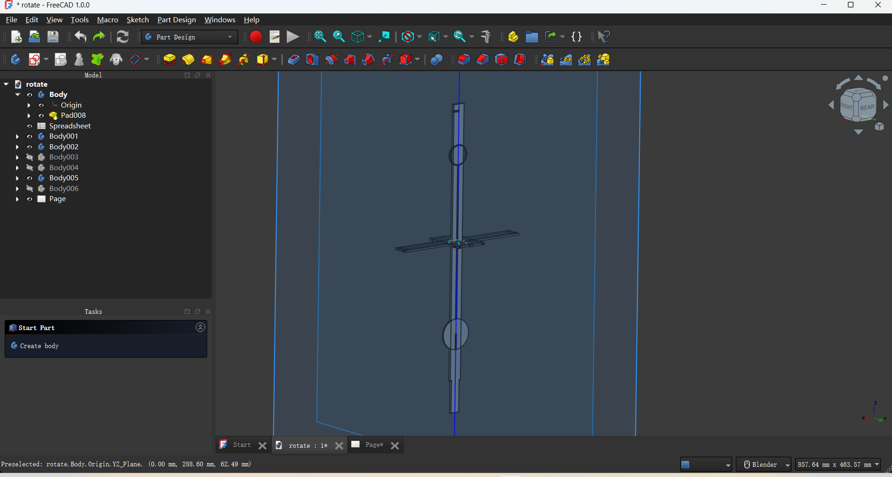
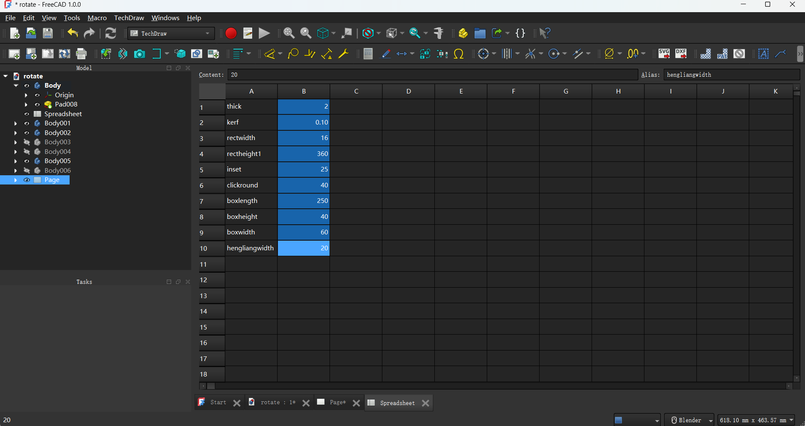
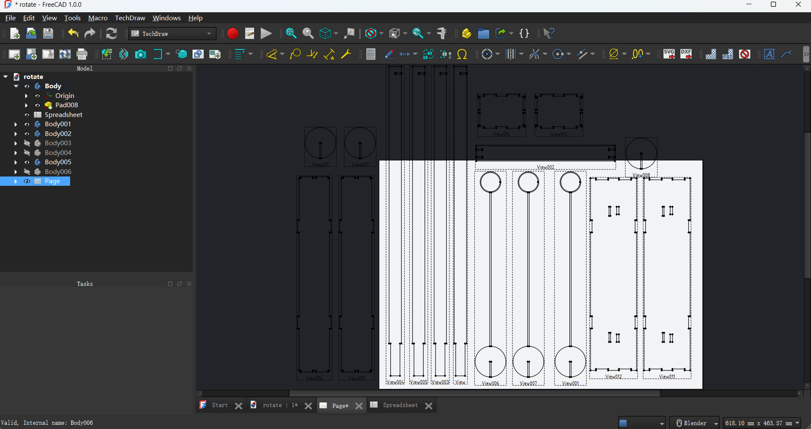
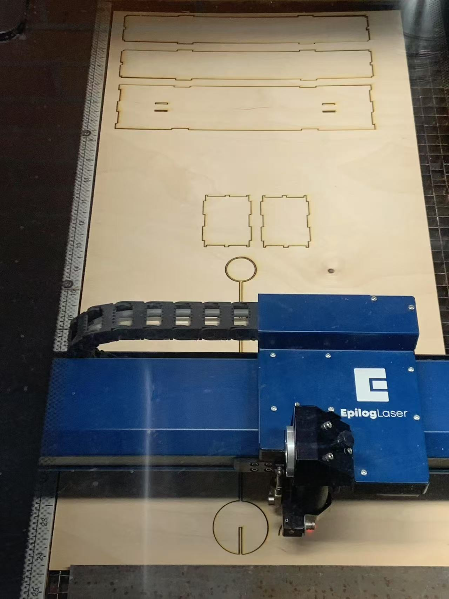
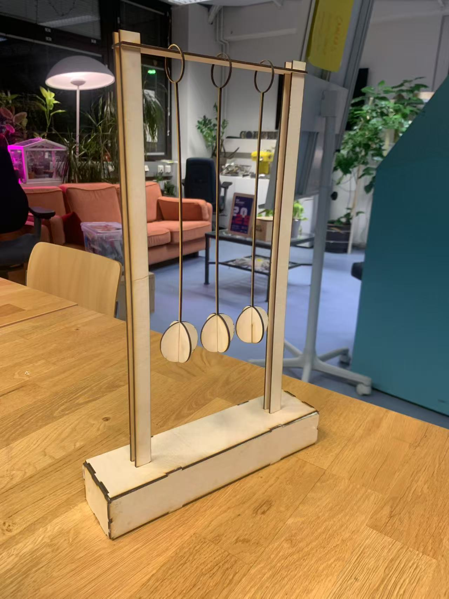

Introduction
Vinyl Cutting: Employ a sharp blade to cut thin materials like PVC vinyl, commonly used for creating stickers, signs, and wall decals (ideal for 2D design but limited for soft material and complex 3D cuts.)
Waterjet Cutting: Use high-pressure water(sometimes mix with abrasives) to cut through materials like metals, stones, ceramics and glass, it is slower than laser cutting but can handle different thickness of materials.
Laser Cutting: Uses a high-powered laser beam to melt or vaporize material, achieving precise cuts. Laser cutting is suitable for metals, plastics, wood, and paper. However, it may not be ideal for very thick materials and can be limited by the material's reflectivity.
Laser Waist: This refers to the point where the laser beam is at its narrowest, resulting in the highest energy density.
Laser Focus: This is the process of adjusting the laser beam to focus on the material's surface, ensuring optimal cutting performance.
Kerf: The width of the cut made by the laser beam. Understanding kerf is crucial for precise design adjustments, as it affects the final dimensions of the cut piece.
Project
I use laser cutting to design a Newton's Cradle.
At first, I model 7 parts in freeCAD. (padding every sketch to 3D.) Try to see the parts I'm going to assemble in a more concret way, avoid set the wrong parameter leading to assembly issues.
I use spreadsheet to set the parameters/Alias and use them repeatly in sketch, so that if I want to change sketch length like material thickness, I only need to change the parameter in spreadsheet, it will change all the length that use this parameter.
Then, I switch to TechDraw mode and insert view from the pad model, and I export svg to start the laser cutting.
Make sure every step of the laser cutting is done well, then wait it finished.
After it was finished, I just assemble it, becaurse the material thinckness is 2mm, which is too thin to insert each other, so I use glue to secure the model.
Here is the freeCAD file I mentioned.